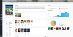
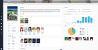
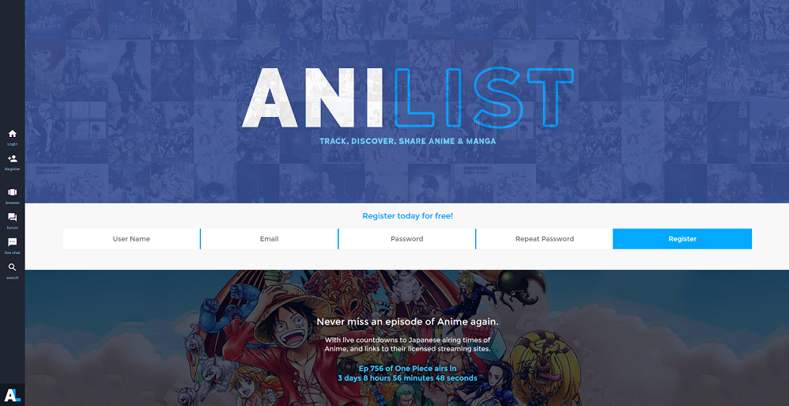

Présentation de sites web
Anilist.co
Information de base
Anilist.co est un site de base de données sur les animations japonaises.
La couleur de fond est blanche
Les couleurs de textes sont:
- Bleu et gris pour le texte
- Blanc pour les liens
- Blanc pour les textes et les liens derière un fond sombre
Le menu de navigation est à gauche de la page et est un menu vertical. Ce menu nous permet d'accéder à la page de connexion, d'enregistrement, d'exploration, le forum, le clavardage et de recherche
La page d'acceuil mesure 3 écrans sur une résolutions de 1920x1080
La page d'acceuil contient aucune publicités.
Ce site se fixe à avoir un design très simple.
Gallerie
 




Étude des image graphiques


- Le nom du fichier d'image
- Format: Jpg
- Dimentions: 200x200px
- Taille: 29,4Ko
- Cette image à été comvertie en jpg
- Elle est la plus petite des deux versions de 2,6Ko
- Le nom du fichier d'image
- Format: Jpg
- Dimentions: 1400x70px
- Taille: 122Ko
- Cette image à été comvertie en jpg
- Elle est la plus grande des deux versions de 83,8Ko
- Le nom du fichier d'image
- Format: png
- Dimentions: 200x200px
- Taille: 32Ko
- Cette image est son format original
- Elle est la plus grande des deux versions de 2,6Ko
- Le nom du fichier d'image
- Format: png
- Dimentions: 200x200px
- Taille: 38,2Ko
- Cette image est son format original
- Elle est la plus petite des deux versions de 83,8Ko